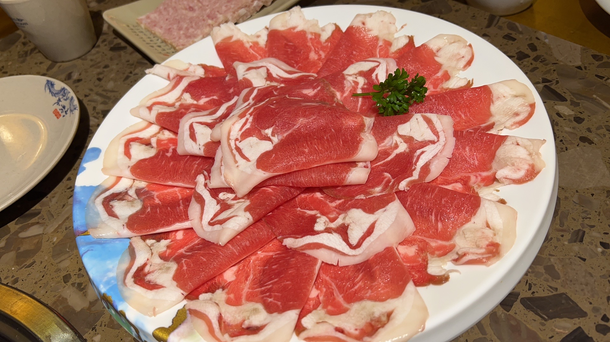
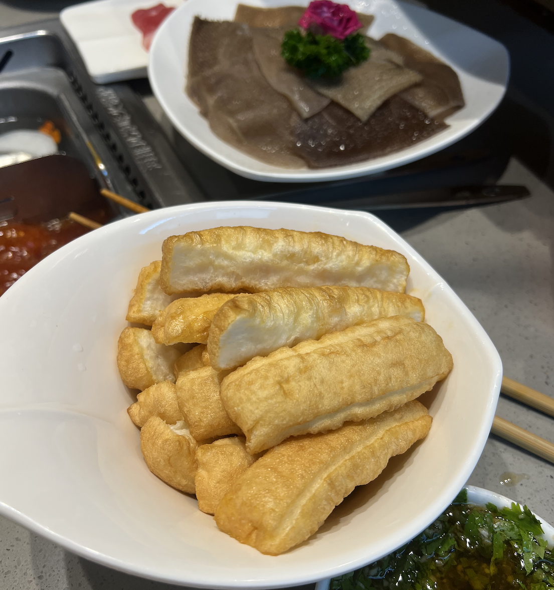
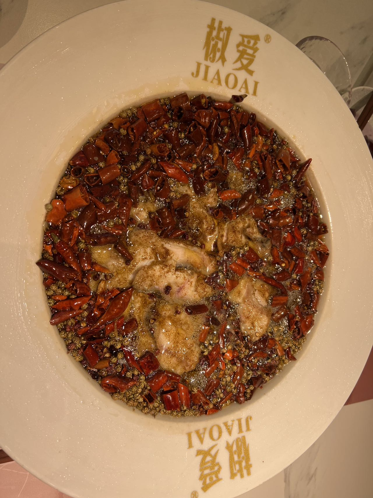
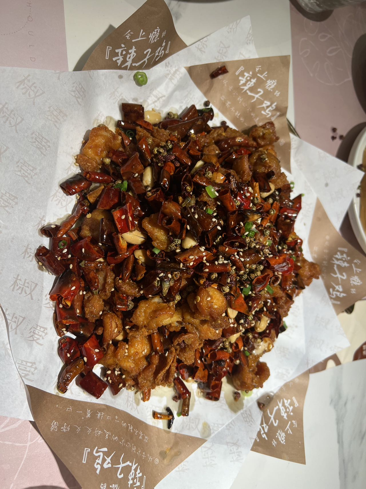

Hot Pot
Hot Pot Beef
Hot Pot You Tiao
Sichuan province, where has the cutest animal in the world, Panda. People almost eat everything there with spicy. My favorite part of Sichuan food is hotpot. Hotpot is using the soup that you choose to boil raw food by yourself, for example there are mushroom soup, tomato soup, chili soup, and even fish soup. You can put all kinds of food inside the soup, any meat that you want to eat, any vegetable you can image. When the food is cooked, you can use the dipping sauce to make it even better.
Spicy chicken is a classic home-cooked dish. It is generally made of whole chicken as the main ingredient, plus onions, dried peppers, peppercorns, salt, pepper, monosodium glutamate and other materials. feature. Spicy chicken has different characteristics due to different production methods in different places, and is deeply loved by people from all over the world. This dish is brownish-red and oily in color and has a strong spicy taste.
Boiled Fish
Spicy Chicken